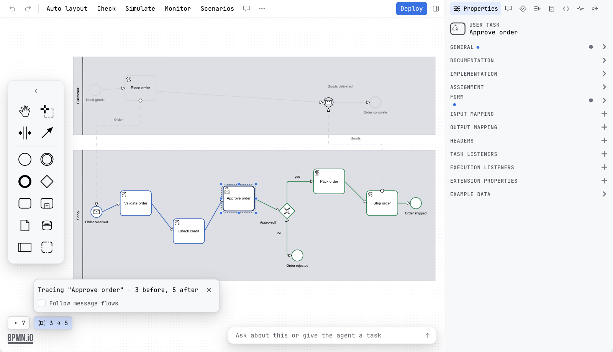

Guide / Editors
Trace paths
Select a step and the editor shows every path that runs through it, what leads there and what leads on from there, with the rest of the diagram dimmed.
What it is
In a large diagram the question is often "how does the process get here?" or "what can happen after this?". Trace paths answers it on the canvas. It follows the flows backwards from the step you chose to every start, and forwards to every end, and dims everything that is on neither side.
It reads only the diagram. Nothing is sent to an engine and no token moves, so it is not Token simulation. It also looks at every path the drawing allows, not the paths your data takes, which is what Flow analysis reports on.
Trace a step
- Select a task, a gateway or an event.
- Press the trace icon on the pad beside the element, or choose Trace paths in the More menu, under View.
- The paths that lead to the step and the paths that lead on from it stay in full colour. The rest of the diagram is dimmed.
- Read the small card over the canvas. It names what is traced and counts the steps on each side, for example Tracing Approve order - 3 before, 5 after.
- To end it, press Esc, click on the empty canvas, press the close button on the card, or run the action again.
The action is off until something that can be traced is selected. Its tooltip then says Select a task, a gateway or an event to trace the paths that run through it.

How boundary events and event sub-processes read
- A boundary event is read as a way out of the task it sits on. Tracing the task includes the path that leaves through the boundary event.
- An event sub-process is read as one way into its parent. Tracing a step inside the parent includes it.
Follow message flows
In a diagram with more than one pool the card has a checkbox, Follow message flows. Tick it and the trace follows the message flows across the pools. Without it the trace does not cross them.
In a decision
The decision editor has the same action. In the requirements diagram, select a decision and run Trace paths. It shows every decision and input the selected decision needs, and everything that depends on it. Its tooltip, with nothing selected, says Select a decision in the requirements diagram to trace what it needs. See The DMN editor.
What it does not change
A trace exists on the canvas only. It adds nothing to the undo history, nothing to the file, and nothing to an export or a shared page.
What you see
- The traced step with the paths on both sides in full colour, and the rest of the canvas dimmed.
- A card with the name of the step and how many steps are before and after it.
Common problems
- Trace paths is greyed out.
- Nothing traceable is selected. Select a task, a gateway or an event first.
- The other pool is dimmed.
- Tick Follow message flows in the card to cross the message flows between pools.
- I want the paths a real run took.
- Trace paths shows what the drawing allows. For what a run did, use Scenarios or Monitor.